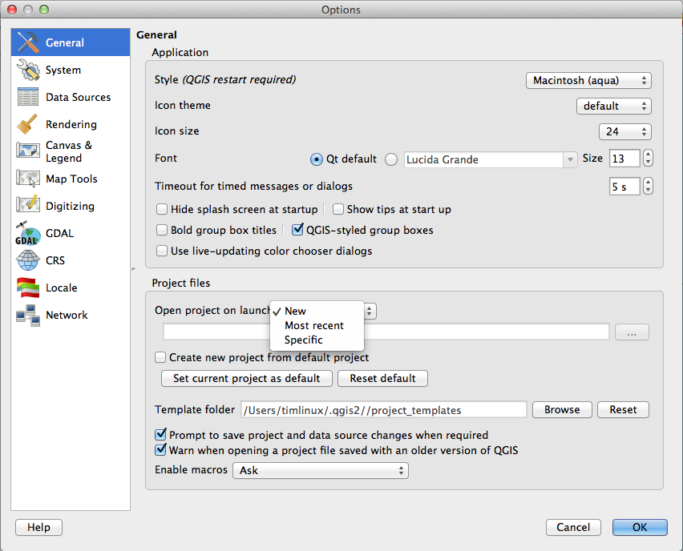
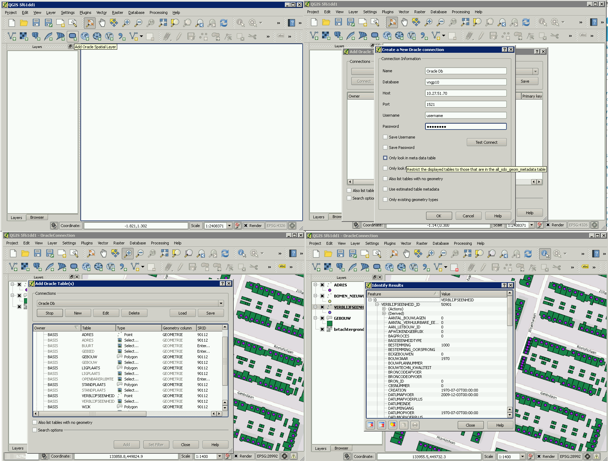
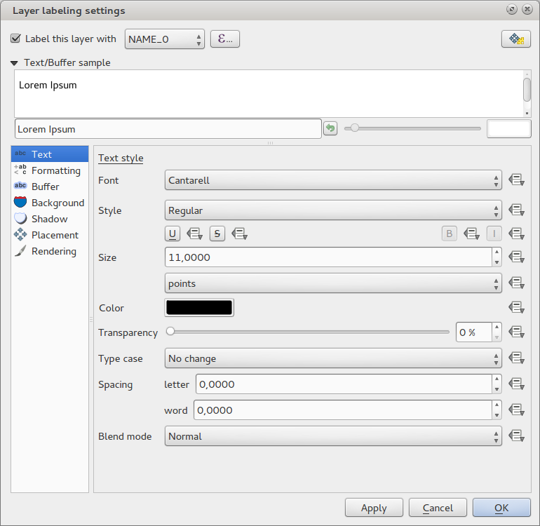
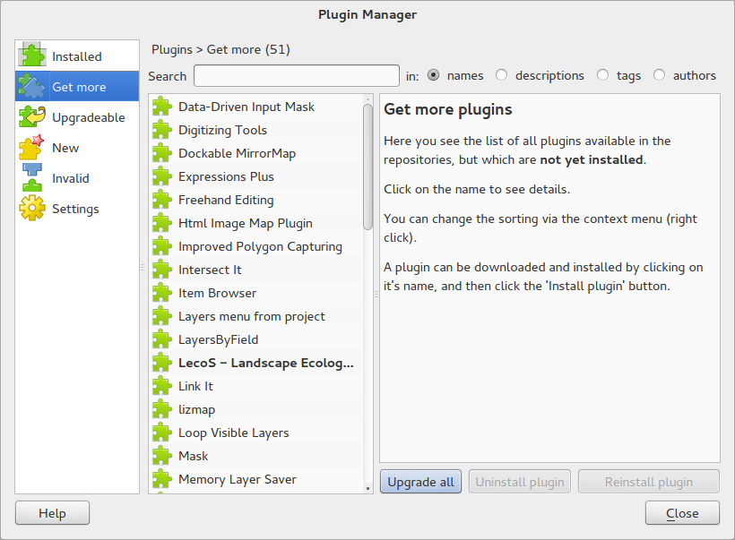
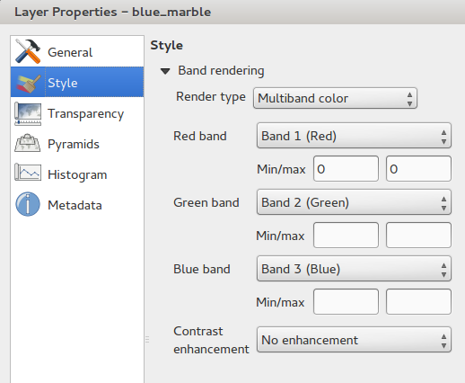
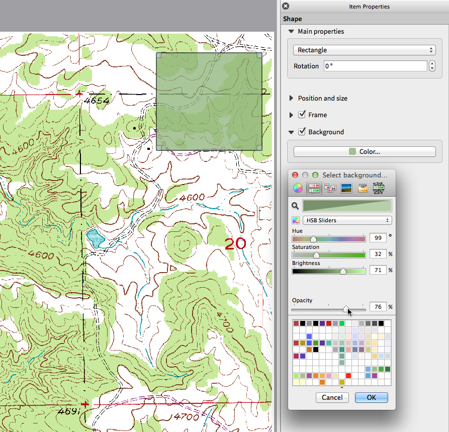
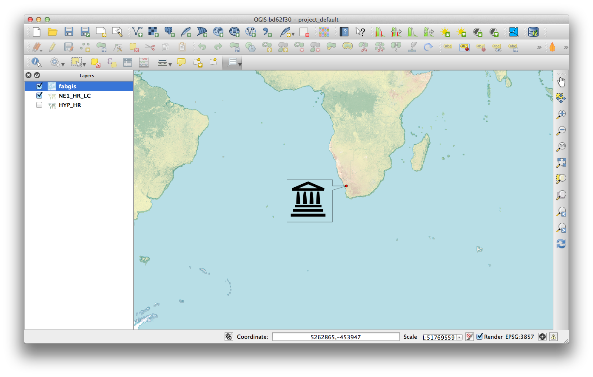

Registo de alterações do QGIS 2.0¶
- Ferramentas de Análise
- Opções da Aplicação e do Projeto
- Navegador
- Fornecedores de Dados
- Geral
- Rotular
- Legenda da Camada
- Compositor de Mapas
- Funcionalidade: Itens de Mapa HTML
- Funcionalidade: Suporte multi-página
- Funcionalidade: Expressões nos rótulos do compositor
- Funcionalidade: Atracão automática às linhas
- Funcionalidade: Linhas Manuais de Atracão
- Funcionalidade: Geração de séries de mapas
- Funcionalidade: Suporte para pré-visualização automática na moldura do mapa
- Funcionalidade: Mistura nas Camadas
- Funcionalidade: suporte para rótulos HTML
- Funcionalidade: Legenda Multi-coluna no compositor
- Funcionalidade: Atualizações na gestão de compositores de mapas
- Módulos
- Programabilidade
- Simbologia
- Funcionalidade: Propriedades definidas para dados
- Funcionalidade: Melhoria da gestão de símbolos da camada
- Funcionalidade: Suporte de transparência nas definições de cor
- Funcionalidade: Controlo de cores para Camadas Raster
- Funcionalidade: Copiar simbologia entre camadas
- Funcionalidade: Guardar estiios na sua base de dados
- Funcionalidade: suporte para paleta de cores
- Funcionalidade: Definir estilos padrão personalizados para todos os tipos de camadas
- Interface de Utilizador
- Feature: Novos temas de ícones
- Funcionalidade: Separadores laterais, grupos colapsáveis
- Funcionalidade: Notificações suaves
- Funcionalidade: Personalização da fonte da aplicação e ficheiro de estilos Qt
- Funcionalidade: Diálogo para a Escolha de cores e botões
- Funcionalidade: Anotações SVG
- Funcionalidade: Arrastar e soltar do construtor de formulário
- Funcionalidade:
Ferramentas de Análise¶
Funcionalidade: Linha de comandos de processamento¶
Para acesso rápido a ferramentas de geoprocessamento, abra a linha de comandos de processamento (Ctrl + Alt + M) e comece a escrever o nome da ferramenta que procura. A linha de comandos mostrará quais as opções disponíveis e abri-las-à por si. Acabaram-se as procuras pelos menus para encontrar Ferramentas. Elas estarão disponíveis na ponta dos seus dedos.

Funcionalidade: Melhoramento do Módulo Heatmap¶
O módulo mapa térmico (heatmap) sofreu várias melhorias e otimizações, resultando na criação mais rápida de mapas térmicos. Adicionalmente, pode escolher o tipo de função kernel que é usado para criar o mapa térmico.

Funcionalidade: Suporte do Processamento¶
O projeto SEXTANTE foi portado e incorporado no QGIS como funcionalidade core. O SEXTANTE foi renomeado para “Processamento” e introduzido como novo menu no QGIS onde pode aceder a uma barra de ferramentas de ferramentas de análise espacial. A caixa de ferramentas processamento é uma funcionalidade incrível - com a API de programação python que permite facilmente adicionar novas ferramentas, e fornecer acesso às capacidades de análise de várias ferramentas populares open source tais como, GRASS, OTB, SAGA, etc.

Funcionalidade: Modelador do Processamento¶
Uma das grandes funcionalidades da nova infraestrutura do processamento é a habilidade de combinar as ferramentas graficamente. Usando o Modelador do Processamento, pode construir análises complexas para uma série de pequenos módulos. Pode guardar esses modelos e de seguida construir blocos em modelos ainda mais complexos. Fantástico poder integrado no QGIS e muito fácil de usar!

Opções da Aplicação e do Projeto¶
Funcionalidade: Definir o projeto inicial padrão e os modelos do projeto¶
Com o QGIS 2.0 pode especificar o que o QGIS deve fazer quando inicia: `` Novo Projecto`` (comportamento padrão, inicia com um projeto em branco), `` Mais recentes`` (quando inicia o QGIS este carregará o último projecto em que trabalhou), `` Específico`` (carrega sempre um projeto específico quando o QGIS é iniciado). Poderá usar o directório do modelo de projecto para especificar onde devem ser armazenados os seus projetos modelo. Qualquer projecto que armazene nesse directório estará disponível para uso como modelo ao invocar o menu `` Projeto -> Novo a partir do modelo ``.

Funcionalidade: variáveis do ambiente do Sistema¶
Current system environment variables can now be viewed and many configured within the application Options dialog. Useful for platforms, such as Mac, where a GUI application does not necessarily inherit the user’s shell environment. Also useful for setting/viewing environment variables for the external tool sets controlled by the processing toolbox, e.g. SAGA, GRASS; and, for turning on debugging output for specific sections of the source code.

Funcionalidade: Escalas de ampliação definidas pelo utilizador¶
A listing of zoom scales can now be configured for the application and
optionally overridden per project. The list will show up in the
Scale popup combo box in the main window status bar, allowing for
quick access to known scales for efficiently viewing and working with
the current data sources. Defined scales can be exported to an XML file
that can be imported into other projects or another QGIS application.

Navegador¶
Funcionalidade: Melhoramento do painel do navegador¶
- As diretorias podem ser filtradas por wildcard ou expressões regulares
- Nova
Diretoria do Projeto(caminho do projeto atual) - Ver as
Propriedadesda diretoria selecionada numa janela de diálogo - Escolher a diretoria para fazer
Pesquisa rápida - Escolher
Adicionar ao diretóriodiretamente nosFavoritosatravés da janela do navegador de ficheiros - Novo
/Volumesno Mac (diretório escondido para o acesso de drives externas) - Novo grupo
OWS(agrupamento de ligações disponíveis de servidores de mapas) - Abrir um segundo navegador (
Ver->Painéis->Navegador (2)) para interações de arrastar e largar entre painéis de navegador - Os ícones agora são ordenados por tipos de item de grupo (ficheiros de sistema, bases de dados, servidores de mapas)
- A camada
Propriedadestem agora um layout visualmente melhor

Fornecedores de Dados¶
Funcionalidade: Restruturação do Fornecedor de Dados Raster¶
The raster data provider system has been completely overhauled. One of the best new features stemming from this work is the ability to “Layer -> Save As…” to save any raster layer as a new layer. In the process you can clip, resample, and reproject the layer to a new Coordinate Reference System. You can also save a raster layer as a rendered image so if you for example have single band raster that you have applied a colour palette to, you can save the rendered layer out to a georeferenced RGB layer.

Funcionalidade: Suporte para Oracle Spatial¶
O QGIS 2.0 agora inclui suporte para Oracle Spatial.

Funcionalidade: Fornecedor de Serviço Web de Cobertura adicionado¶
O QGIS agora fornece suporte nativo para camadas de Serviços de Cobertura Web - o processo de adicionar o WCS é semelhante ao de adicionar a camada WMS ou a camada WFS.
Funcionalidade: Corte cumulativo Raster 2% por defeito¶
Many raster imagery products have a large number of outliers which result in images having a washed out appearance. QGIS 2.0 intoduces much more fine grained control over the rendering behaviour of rasters, including using a 2% - 98% percent cumulative cut by default when determining the colour space for the image. The image here shows QGIS 1.8 (left) versus QGIS 2.0 (right) when rendering the same image with default settings.

Funcionalidade: Formato de identificação WMS¶
It is now possible to select the format of the identify tool result for WMS layers if multiple known formats are supported by the server. The supported formats are HTML, feature (GML) and plain text. If the feature (GML) format is selected, the result is in the same form as for vector layers, the geometry may be highlighted and the feature including attributes and geometry may be copied to clipboard and pasted to another layer.

Funcionalidade: Suporte WMTS¶
O WMS cliente no QGIS suporta agora WMTS (Serviços Web de Mapa por Mosaicos) incluindo a seleção de sub-conjuntos por exemplo camadas temporais. Quando adiciona a camada WMS a partir do servidor, será-lhe pedido para selecionar o período temporal que será exibido.

Geral¶
Funcionalidade: Quantum GIS é agora conhecido como “QGIS”¶
The “Quantum” in “Quantum GIS” never had any particular significance and
the duality of referring to our project as both Quantum GIS and
QGIS caused some confusion. We are streamlining our project and as
part of that process we are officially dropping the use of the word
Quantum - henceforth we will be known only as QGIS (spelled with
all letters in upper case). We will be updating all our code and
publicity material to reflect this.

Rotular¶
Funcionalidade: Novo sistema de rotulagem¶
The labelling system has been totally overhauled - it now includes many new features such as drop shadows, “highway shields”, many more data bound options, and various performance enhancements. We are slowly doing away with the “old labels” system, although you will still find that functionality available for this release, you should expect that it will disappear in a follow up release.

Funcionalidade: Expressões baseadas em propriedades do rótulo¶
The full power of normal label and rule expressions can now be used for label properties. Nearly every property can be defined with an expression or field value giving you more control over the label result. Expressions can refer to a field (e.g. set the font size to the value of the field “font”) or can include more complex logic.
Exemplos de propriedades unidas incluídas:
- Fonte
- Tamanho
- Estilo
- Tamanho de buffer

Funcionalidade: Motor de rotulagem antigo obsoleto¶
Nós desencorajamos o uso do velho mecanismo de rotulagem disponível no QGIS <=1.8 (é obsoleto), mas não foi removido. Isto permite também aos utilizadores migrar projetos existentes a partir do velho para o novo mecanismo de rotulagem.
as seguintes linhas orientadoras para trabalhar com o antigo motor no QGIS 2.0 aplica-se:
- O separador da rotulagem obsoleto foi removido do diálogo de propriedades da camada vetorial para os novos projetos ou antigos projetos abertos que não usem esse tipo de mecanismo de rotulagem.
- O separador obsoleto continua ativo para projetos antigos abertos, se qualquer camada usá-lo, e não vai sair mesmo depois de guardar o projeto sem camadas tendo o velho mecanismo de rotulagem ativo.
O separador obsoleto de rotulagem pode ser ativado/desativado para o projeto atual, através da linha de comandos do Python, por ex.:
>>> QgsProject.instance().writeEntry('DeprecatedLabels', '/Enabled', True | False)
# or
>>> QgsProject.instance().removeEntry('DeprecatedLabels', '/')
NOTA: existe uma forte probabilidade do mecanismo obsoleto de rotulagem ser completamente removido após o próximo lançamento do QGIS. Por favor migre os projetos antigos.

Legenda da Camada¶
Funcionalidade: Feedback da legenda visual e opções¶
- Contagem total para elementos na camada, assim como para o símbolo
- Agora as camadas vetoriais em modo edição têm um lápis vermelho para indicar edições que não submetidas (não estão guardadas).
- A camada ativa agora está sublinhada, para indica-la numa seleção multi-camada ou quando não existe seleção.
- Clicar em itens que não são do tipo lista com espaço vazio agora permite limpar a seleção
Cliques com o botão direito do ratosão agora tratados comocliques com o botão esquerdo do ratodepois de mostrar o menu contextual, permitindo um simples clique em vez de dois.- Grupos e camadas podem opcionalmente estarem a negrito.
- A pré-visualização do ícone da camada raster pode ser desligada para projetos onde este tipo de renderização possa ser lento

Funcionalidade: Duplicar uma camada existente no mapa¶
Duplicate selected vector and raster layers in the map layer legend. Similar to importing the same data source again, as a separate layer, then copy/pasting style and symbology attributes.

Funcionalidade: Ativação de comandos de edição das multi-camadas¶
User can now select multiple layers in legend and, if any of those are vector layers in edit mode, choose to save, rollback, or cancel current uncommitted edits. User can also choose to apply those actions across all layers, regardless of selection.

Compositor de Mapas¶


Funcionalidade: Expressões nos rótulos do compositor¶
The composer label item in 1.8 was quite limited and only allowed a single token $CURRENT_DATE to be used. In 2.0 full expression support has been added too greater power and control of the final labels.
Um rótulo com uma expressão como:
This was printed on: [% format_date( $now, 'dd.MM.yyyy')%]
será avaliado na altura de impressão (e exibe o tempo) para gerar:
This was printed on: 06.09.2013
When atlas generation is enabled the currently active features” attribute values will also be accessible in the expressions allowing such things as:
Asset ID [% "ID" %] and the Tree Type is [% "TreeType" %]

Funcionalidade: Atracão automática às linhas¶
Having nicely align map items is critical to making nice printed maps. Auto snapping lines have been added to allow for easy composer object alignment by simply dragging an object close to another.

Funcionalidade: Linhas Manuais de Atracão¶
Sometimes you need to align objects a curtain distance on the composer. With the new manual snapping lines you are able to add manual snap lines which allow for better align objects using a common alignment. Simply drag from the top or side ruler to add new guide line.

Funcionalidade: Geração de séries de mapas¶
Ever needed to generate a map series? Of course you have. The composer now includes built in map series generation using the atlas feature. Coverage layers can be points, lines, polygons, and the current feature attribute data is available in labels for on the fly value replacement.

Funcionalidade: Suporte para pré-visualização automática na moldura do mapa¶
Need to show the current area of the main map frame in a smaller overview window. Now you can. The map frame now contains the ability to show the extents of other and will update when moved. Using this with the atlas generation feature now core in the composer allows for some slick map generation. Overview frame style uses the same styling as a normal map polygon object so your creativity is never restricted.

Funcionalidade: Mistura nas Camadas¶
Layer blending makes it possible to combine layers in new and exciting ways. While in older versions, all you could do was to make the layer transparent, you can now choose between much more advanced options such as «multiply», «darken only», and many more.
Blending can be used in the normal map view as well as in print composer. For a short tutorial on how to use blending in print composer to make the most out of background images, see «Vintage map design using QGIS».

Funcionalidade: suporte para rótulos HTML¶
HTML support has been added map composer label item to give you even more control over your final maps. HTML labels support full css styles sheets, html, and even javascript if you are that way inclined.

Funcionalidade: Legenda Multi-coluna no compositor¶
The composer legend now supports multiple columns. Splitting of a single layer with many classes into multiple columns is optional. Single symbol layers are now added by default as single line item. Three different styles may be assigned to layer/group title: Group, Subgroup or Hidden. Title styles allow arbitrary visual grouping of items. For example, a single symbol layer may be displayed as single line item or with layer title (like in 1.8), symbols from multiple following layers may be grouped into a single group (hiding titles) etc. Feature counts may be added to labels.

Funcionalidade: Atualizações na gestão de compositores de mapas¶
As seguintes melhorias foram feitas para a gestão do compositor de mapas:
- O nome do compositor pode ser definido durante a sua criação, opcionalmente escolhendo como iniciar a partir de outros nomes de compositores
- Compositores podem ser duplicados
Novo a partir do Modeloe a partir doEspecífico(no Gestor de Compositores) cria um compositor a partir de um modelo localizado no sistema de ficheiros- O projeto pode ser guardado diretamente a partir do espaço de trabalho do compositor
- Toda a gestão das ações do compositor podem ser agora acessíveis a partir do espaço de trabalho do compositor

Módulos¶
Funcionalidade: Gestor de módulos renovado¶
In QGIS 1.x managing plugins was somewhat confusing with two interfaces - one for managing already installed plugins and one for fetching python plugins from an only plugin repository. In QGIS 2.0 we introduce a new, unified, plugin manager which provides a one stop shop for downloading, enabling/disabling and generally managing you plugins. Oh, and the user interface is gorgeous too with side tabs and easy to recognise icons!

Programabilidade¶
Funcionalidade: Nova Linha de comandos Python¶
A nova linha de comandos do Python fornece mais poder. Agora com o suporte para auto-preenchimento, destaque de sintaxe, configurações de ajuste da fonte. O lado lateral do editor de código permite de forma fácil a entrada de blocos largos de código com a possibilidade de abrir e executar qualquer tipo de ficheiro Python na sessão QGIS.

Funcionalidade: Mais funções de expressão¶
With the expression engine being used more and more though out QGIS to allow for things like expression based labels and symbol, many more functions have been added to the expression builder and are all accessible though the expression builder. All functions include comprehensive help and usage guides for ease of use.

Funcionalidade: funções de expressão personalizáveis¶
E se o mecanismo de expressões não tiver a função que não necessita. Não se preocupe. As novas funções podem ser adicionadas através do módulo usando uma simples API Python.

Funcionalidade: Nova API Python¶
The Python API has been revamped to allow for a more cleaner, more pythonic, programming experience. The QGIS 2.0 API uses SIP V2 which removes the messy toString(), toInt() logic that was needed when working with values. Types are now converted into native Python types making for a much nicer API. Attributes access is now done on the feature itself using a simple key lookup, no more index lookup and attribute maps.
>>> feature['mycolumn'] = 10
>>> feature['mycolumn']
10
A forma como os elementos são lidos a partir da camada foram também melhoradas para o multithreading das futuras versões.
for feature in layer.getFeatures():
print feature['mycolumn']

Funcionalidade: Compatibilidades de código com os lançamentos das versões 1.x¶
As this is a major release, it is not completely API compatible with previous 1.x releases. In most cases porting your code should be fairly straightforward - you can use this guide to get started. Please use the developer mailing list if you need further help.

Funcionalidade: Macros Python no projeto¶
O módulo Python, guardado dentro de um ficheiro de projeto.qgs, pode ser carregado e tem funções específicas que executam os seguintes eventos no projeto:
openProject()saveProject()closeProject()
As macros que são executadas podem ser configuradas nas opções da aplicação

Simbologia¶
Funcionalidade: Propriedades definidas para dados¶
Com as novas propriedades de dados definidos, é possível controlar o tipo de símbolo, tipo, tamanho, cor, rotação, e outras propriedades através dos atributos do elemento.

Funcionalidade: Melhoria da gestão de símbolos da camada¶
A pré-visualização do novo símbolo da camada usa um aspeto limpo e bem estruturado que permite facilmente o rápido acesso a todos os símbolos da camada.

Funcionalidade: Suporte de transparência nas definições de cor¶
In most places where you select colours, QGIS now allows you to specify the alpha channel (which determins how transparent the colour should be). This allows you to create great looking maps and to hide data easily that you don’t want users to see.

Funcionalidade: Controlo de cores para Camadas Raster¶
QGIS 2.0 allows you to precisely control exactly how you’d like raster layers to appear. You now have complete control over the brightness, contrast and saturation of raster layers. There’s even options to allow display of rasters in grayscale or by colorising with a specified color.

Funcionalidade: Copiar simbologia entre camadas¶
Its now super easy to copy symbology from one layer to another layer. If
you are working with several similar layer, you can simply
right-click on one layer, choose Copy Style from the context
menu and then right-click on another layer and choose
Paste-Style.

Funcionalidade: Guardar estiios na sua base de dados¶
If you are using a database vector data store, you can now store the layer style definitions directly in the database. This makes it easy to share styled layers in an enterprise or multi-user environment.

Funcionalidade: suporte para paleta de cores¶
Colour ramps are now available in many places in QGIS symbology settings and QGIS ships with a rich, extensible set of colour ramps. You can also design your own and many cpt-city themes are included in QGIS now “out of the box”. Color ramps even have full support for transparency!

Funcionalidade: Definir estilos padrão personalizados para todos os tipos de camadas¶
Agora o QGIS deixa-o controlar a forma como as novas camadas serão desenhadas quando não têm um estilo .qml definido. Pode definir um nível padrão de transparência para novas camadas e que símbolos devem ter cores aleatórias atribuídas.

Interface de Utilizador¶
Feature: Novos temas de ícones¶
Nós atualizámos o ícone do tema para usar o tema “GIS” o que introduz uma melhoria em termos de consistência e profissionalismo para a interface do utilizador QGIS.

Funcionalidade: Separadores laterais, grupos colapsáveis¶
We have standardised the layout of tabs and introduced collapsible group boxes into many of our dialogs to make navigating the various options more easy, and to make better use of screen real estate.

Funcionalidade: Notificações suaves¶
In many cases we want to tell you something, but we don’t want to stop your work or get in your way. With the new notification system QGIS can let you know about important information via a yellow message bar that appears at the top of the map canvas but doesn’t force you to deal with it if you are busy doing something else. Programmers can create these notification (e.g. from a plugin) too using our python API.

Funcionalidade: Personalização da fonte da aplicação e ficheiro de estilos Qt¶
The system font used for the application’s user interface can now be
set. Any C++ or Python plugin that is a child of the QGIS GUI
application or has copied/applied the application’s GUI stylesheet can
inherit its styling, which is useful for GUI fixes across platforms and
when using custom QGIS Qt widgets, like QgsCollapsibleGroupBox.
Os ficheiro de estilo gerado para a aplicação da GUI do QGIS para a plataforma atual pode ser acedida após o lançamento com (o PyQGIS):
qgis.utils.iface.mainWindow().styleSheet()

Funcionalidade: Diálogo para a Escolha de cores e botões¶
Every color chooser button throughout the interface has been updated to
give visual feedback on whether the current color has a transparent, or
“alpha,” component. The color chooser opened by the new color buttons
will now always be the default for the operating system. If the user has
Use live-updating color chooser dialogs checked under
Options -> General -> Application, any change in the color chooser
will immediately be shown in the color button and for any item currently
being edited, where applicable.

Funcionalidade: Anotações SVG¶
Com a versão QGIS 2.0 poderá agora adicionar anotações SVG ao seu mapa e fixá-las num sítio específico ou numa posição relativa sobre o enquadramento do mapa.

Funcionalidade: Arrastar e soltar do construtor de formulário¶
QGIS 2.0 supports a great new system for creating data entry forms. With the drag and drop form designer you can create smart looking forms with tabs to group common fields together. Now it is much easier to control the data entry experience for your users.

Funcionalidade:¶
Se é um utilizador de ações nas camadas vetoriais (pequenas tarefas que pode correr quando clica no elemento), irá adorar esta nova ferramenta de ações nesta barra de ferramentas. Com isto pode selecionar uma ação e de seguida clicar nos seus elementos e invocar a ação.